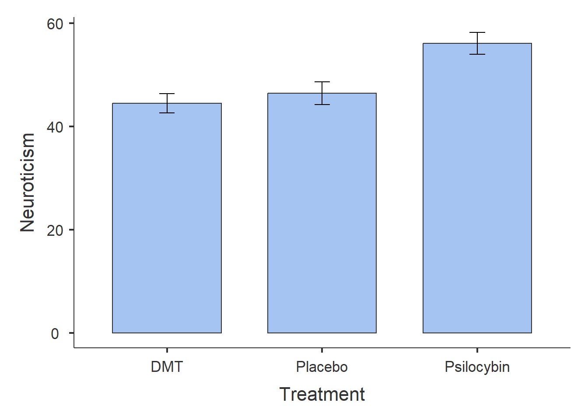
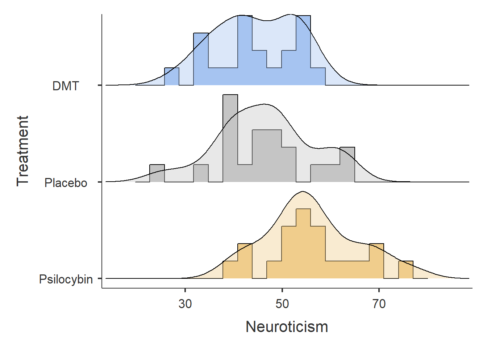
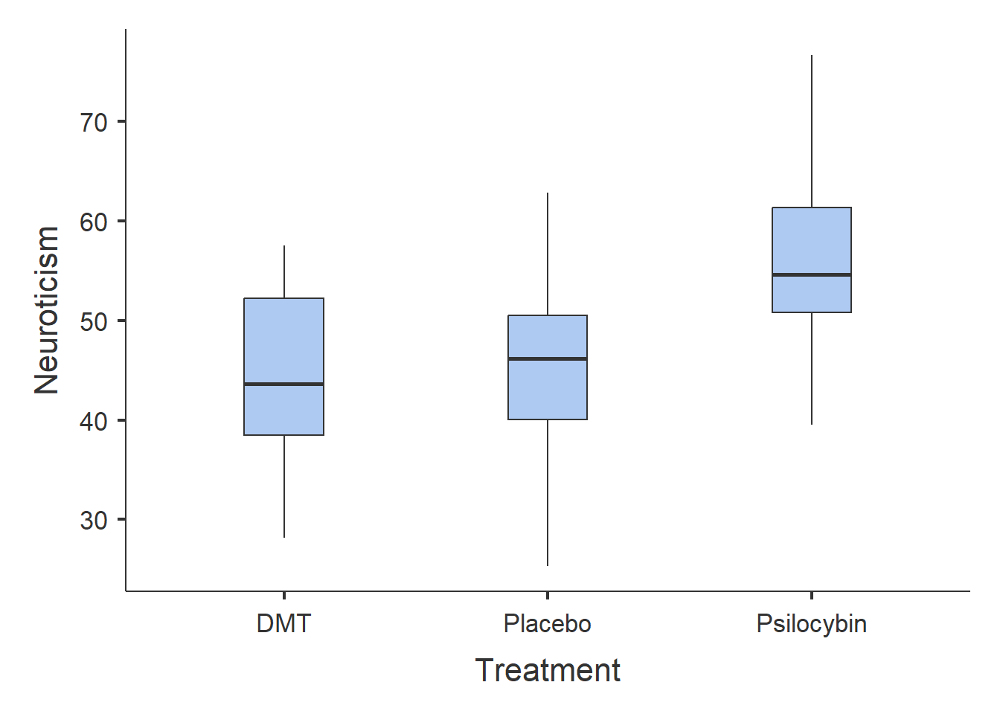
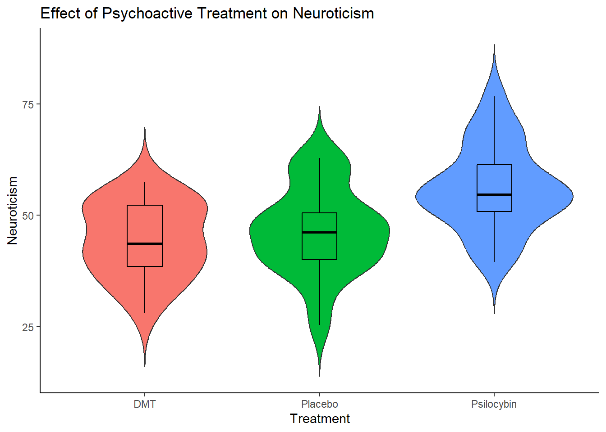
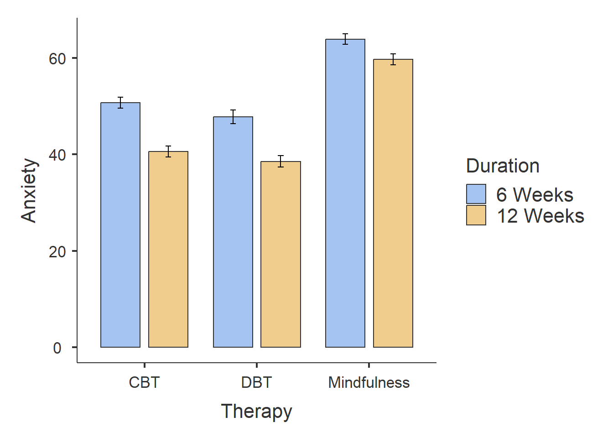
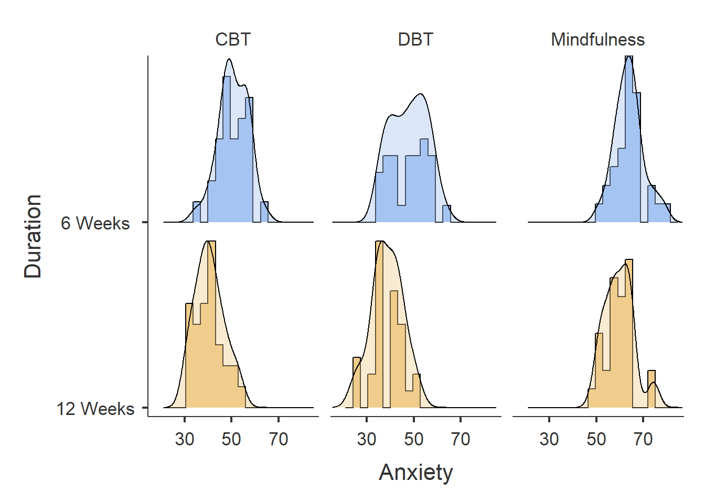
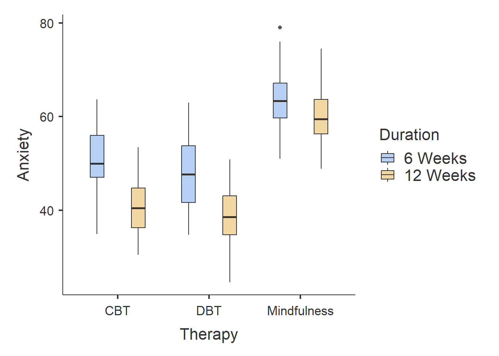
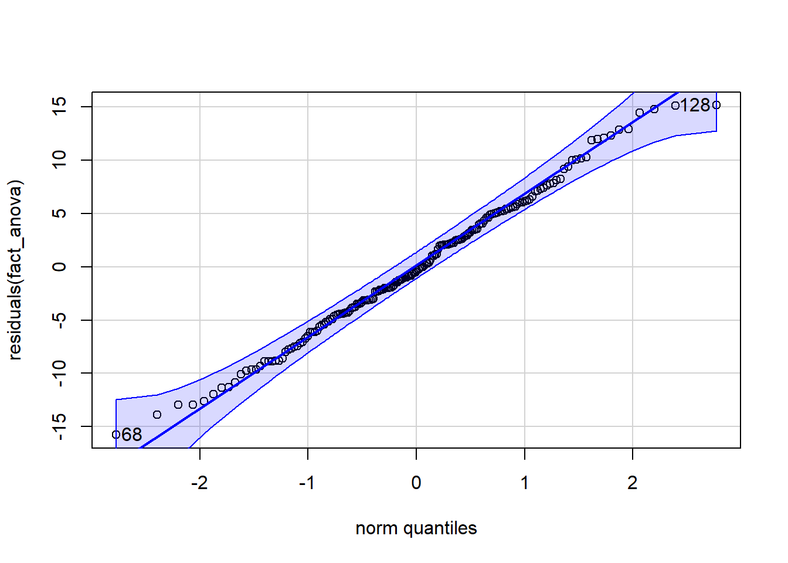
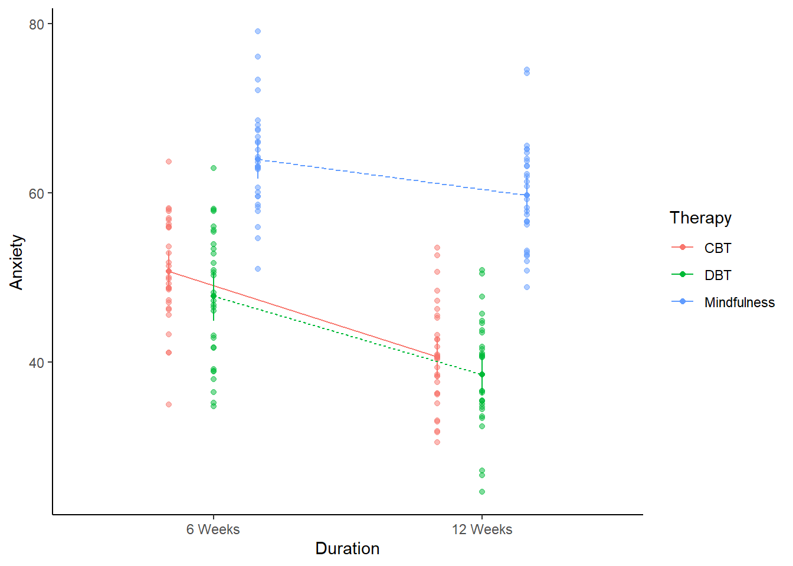

getwd()[1] "C:/Users/0131045s/Desktop/Programming/R/Workshops/rintro/activities/week8"In this week’s workshop, we will learn how to run a between-subjects one-way ANOVA and a between-subjects factorial ANOVA in R.
Before we begin, let’s ensure your working environment is ready for today’s session. Open RStudio or Posit Cloud, and follow the steps below.
Each time we work in R, it’s important to set up our working directory. This is the folder where R looks for files when importing data and where it saves any files you export.
If you don’t set the working directory, R may not be able to locate your dataset, or you might not know where your exported files have been saved. Setting the working directory beforehand helps keep everything organised and prevents these issues.
Click:
Session → Set Working Directory → Choose Directory
Navigate to the folder you created for this course (this should be the same folder you used for previous workshops).
Create a new folder called week8 inside this directory.
Select the week8 folder and click Open.
Don’t forget to verify your working directory before we get started
You can always check your current working directory by typing in the following command in the console:
getwd()[1] "C:/Users/0131045s/Desktop/Programming/R/Workshops/rintro/activities/week8"As in previous weeks we will create an R script that we can use for today’s activities. This week we’ll name the script as 08-anova
Go to the menu bar and select:
File → New File → R Script
This will open an untitled R script.
To save and name your script, select:
File→ Save As, then enter the name:
08-anova
Click Save
At the top of your R script type in and run the following code (this turns off scientific notation from your output):
options(scipen = 999)We will use several R packages to simplify our analysis. Ensure you have them installed and loaded.
REMEMBER: If you encounter an error message like “Error in library(package name): there is no packaged calledpackage name”, you’ll need to install the package first by editing the following for your console:
install.packages("package name") #replace "package name" with the actual package nameHere are the packages we will be using today. Make sure that you have loaded in each of these packages by running the following lines of code.
library(patchwork) #helps build useful plots
library(car) #for checking assumptions
library(afex) #For running our ANOVA models
library(tidyverse) #Data manipulation
library(pwr) #power analysis
library(lsr) #effect size calculations
library(emmeans) #Computes post-hoc tests
library(performance) #Assesses models performances and assumptions
library(jmv) #Descriptive statisticsThis week, we will work with four separate datasets. You can find these datasets on Canvas.
psycho.csv → Dataset for the One-Way ANOVA Examplecaffeine_mood.csv → Dataset for the One-Way ANOVA Exerciseanxiety_treatment.csv → Dataset for the Factorial ANOVA Examplediet_exercise.csv → Dataset for the Factorial ANOVA ExerciseDownload these files onto your computer and move them to your week8 folder.
In recent years, there has been a growing interest in exploring the therapeutic potential of psychoactive treatments for mental health. This dataset examines the effects of Psilocybin and DMT on Neuroticism, a personality trait associated with various psychological disorders. The researchers investigated whether the administration of Psilocybin and DMT had a significant effect on participants’ Neuroticism levels.
Research Question: Is there an effect of psychoactive treatment on Neuroticism?
Hypotheses:
H₀ (Null Hypothesis): There is no effect of psychoactive treatment on Neuroticism.
H₁ (Alternative Hypothesis): There is an effect of psychoactive treatment on Neuroticism.
Method: 60 participants were recruited and randomly assigned to one of three groups: Psilocybin, DMT, or Placebo. One-day after taking the substance, participants completed a Neuroticism Measure.
Our task: Run a One-Way ANOVA to see if there is an effect of Psychoactive treatment on Neuroticism.
First, we need to load the dataset into R using the read.csv() function:
df_psycho <- read.csv("psycho.csv")Once a dataset is loaded, it’s important to always verify that:
It has been loaded correctly.
It contains the expected data.
We can use the head() function to quickly check this by displaying the first 6 rows of the dataset.
head(df_psycho) Participant_ID Treatment Neuroticism
1 1 Placebo 39.39524
2 2 Placebo 42.69823
3 3 Placebo 60.58708
4 4 Placebo 45.70508
5 5 Placebo 46.29288
6 6 Placebo 62.15065Another way you can quickly sanity check your dataset is by checking the last few rows with the tail() function. The tail() function works like the head() function, the only difference being it prints the last 6 rows of the dataset.
tail(df_psycho) Participant_ID Treatment Neuroticism
55 55 Psilocybin 52.74229
56 56 Psilocybin 70.16471
57 57 Psilocybin 39.51247
58 58 Psilocybin 60.84614
59 59 Psilocybin 56.23854
60 60 Psilocybin 57.15942Either way, everything looks in order, so let’s get cracking with the analysis.
Now, let’s run some descriptive statistics using the descriptives() function. This will help us understand the distribution of Neuroticism scores across the different treatment groups.
We will first calculate the mean, standard deviation, and other key statistics for Neuroticism, grouped by Treatment:
descriptives(data = df_psycho,
vars = "Neuroticism",
splitBy = "Treatment"
)
DESCRIPTIVES
Descriptives
───────────────────────────────────────────────────
Treatment Neuroticism
───────────────────────────────────────────────────
N DMT 20
Placebo 20
Psilocybin 20
Missing DMT 0
Placebo 0
Psilocybin 0
Mean DMT 44.48743
Placebo 46.41624
Psilocybin 56.06485
Median DMT 43.60057
Placebo 46.19985
Psilocybin 54.64291
Standard deviation DMT 8.299387
Placebo 9.726653
Psilocybin 9.573406
Minimum DMT 28.13307
Placebo 25.33383
Psilocybin 39.51247
Maximum DMT 57.53815
Placebo 62.86913
Psilocybin 76.68956
─────────────────────────────────────────────────── This gives us a first look at the data, but we can refine it further.
If you remember from week 4, we can adjust the descriptives() function to remove unnecessary details and add visualisations.
In the code below, we will:
Remove the minimum (min = FALSE) and maximum (max = FALSE) values. I am removing both just to remove some clutter from our Descriptives output table.
Generate visualisations:
A histogram (hist = TRUE) with a density overlay (dens = TRUE).
A bar plot (bar = TRUE).
A boxplot (box = TRUE) to examine distribution and possible outliers.
descriptives(data = df_psycho,
vars = "Neuroticism",
splitBy = "Treatment",
min = FALSE,
max = FALSE,
hist = TRUE,
dens = TRUE,
bar = TRUE,
box = TRUE
)Warning in FUN(X[[i]], ...): no non-missing arguments to max; returning -Inf
DESCRIPTIVES
Descriptives
───────────────────────────────────────────────────
Treatment Neuroticism
───────────────────────────────────────────────────
N DMT 20
Placebo 20
Psilocybin 20
Missing DMT 0
Placebo 0
Psilocybin 0
Mean DMT 44.48743
Placebo 46.41624
Psilocybin 56.06485
Median DMT 43.60057
Placebo 46.19985
Psilocybin 54.64291
Standard deviation DMT 8.299387
Placebo 9.726653
Psilocybin 9.573406
─────────────────────────────────────────────────── 


From the results, we can observe the following:
Participants in the Psilocybin group tend to score higher on Neuroticism than those in the DMT or Placebo groups.
The DMT and Placebo groups have similar Neuroticism scores.
Now let’s investigate whether there is a significant effect of Treatment on Neuroticism.
To run a one-way ANOVA, we use the aov_ez() function. Below is the general syntax (you will need to replace certain placeholders with the appropriate column names from your dataset):
anova_example_syntax <- aov_ez(id = "The name of the Participant ID column",
dv = "The name of the dependent variable",
between = "The name of the independent variable",
es = "pes",
type = 3,
include_aov = TRUE,
data = yourdataset)
anova(anova_example_syntax) Let’s unpack what is going on here code wise:
anova_example_syntax <- aov_ez(...): This line of code is creating a new R variable called anova_example_syntax. This variable will store the results of the one-way ANOVA analysis.
id = "the name of your participant ID column": This part specifies the column in your dataset that contains the participant IDs. It helps identify which data points belong to each participant.
dv = "the name of your your dependent variable column": Here, you specify the dependent variable
between = "the name of your your independent variable column": Here, you specify the independent variable
es = "pes": This argument specifies that you want to compute the effect size in terms of partial eta-squared (pes).
type = 3: The type argument specifies the type of sum of squares used in the ANOVA. Type 3 is often used for balanced designs.
include_aov = TRUE: This indicates that you want to include the standard ANOVA table as part of the output. It provides additional information about the analysis.
data = yourdataset: Finally, you specify the dataset on which you want to perform the ANOVA analysis.
Running anova_example_syntax will display the ANOVA results, including the F-statistic, degrees of freedom, and p-value.
Running anova(anova_example_syntax) provides a more detailed table with additional information such as sum of squares and mean squares.
The p-value will help us determine whether the treatment groups significantly differ in Neuroticism scores.
Now, let’s apply the syntax to our actual dataset, df_psycho. We will store the results into the variable anova_one:
anova_one <- aov_ez(id = "Participant_ID",
dv = "Neuroticism",
between = "Treatment",
es = "pes",
type = 3,
include_aov = TRUE,
data = df_psycho) Converting to factor: TreatmentContrasts set to contr.sum for the following variables: Treatmentanova(anova_one)Anova Table (Type 3 tests)
Response: Neuroticism
num Df den Df MSE F ges Pr(>F)
Treatment 2 57 85.046 9.0482 0.24097 0.0003866 ***
---
Signif. codes: 0 '***' 0.001 '**' 0.01 '*' 0.05 '.' 0.1 ' ' 1We can see that the main effect of Treatment on Neuroticism scores was statistically significant (F(2, 57) = 9.05, p < 0.001). This indicates that there are significant differences in Neuroticism scores among the treatment groups. The effect size (partial eta-squared - under the ges column) is 0.241, which suggests that approximately 24.1% of the variance in Neuroticism scores can be attributed to the differences in treatment groups.
Factors are a special data type in R. They enable R to identify categorical variables like:
Nationality (levels: Irish, English, Indian, American, French, German, Brazilian)
Handiness (e.g. right-handed, left-handed, ambi-dextrous)
Experimental Group (e.g. intervention, control)
Education Status (e.g. first-year, second-year, third-year, fourth-year, masters, PhD).
In this case, the aov_ez function is just converting our Treatment variable into a factor/categorical variable, which is what we want!
Factors are really useful when it comes to data manipulation or data wrangling. But we’ll get to that in the last week of the semester.
η² = 0.01 represents a small effect
η² = 0.06 represents a medium effect
η² = 0.14 represents a large effect (Richardson, 2011)
Before interpreting our ANOVA results, we need to check whether the test’s assumptions are met. Since these assumptions relate to how well the ANOVA models the data, we evaluate them after running the test rather than before.
Assumptions of a One-Way Between-Subjects ANOVA
We have already confirmed Assumption 1 (Neuroticism is ratio data) and Assumption 2 (each participant is in only one group, ensuring independence).
Now, let’s check the remaining assumptions.
Checking Normality of Residuals
To verify normality, we will:
- Visualise residuals with a Q-Q plot.
- Run the Shapiro-Wilk test (p > .05 indicates normality).
qqPlot(residuals(anova_one))
[1] 18 44shapiro.test(residuals(anova_one))
Shapiro-Wilk normality test
data: residuals(anova_one)
W = 0.99284, p-value = 0.9791In the Q-Q plot, the dots should closely follow the diagonal line.
In the Shapiro-Wilk test, a p-value greater than .05 suggests that residuals are normally distributed.
Since our p-value is greater than .05 (p > .05), normality is not violated.
Checking Homoegeneity of Variance
We test whether all groups have similar variance using Levene’s Test:
test_levene(anova_one)Warning: Functionality has moved to the 'performance' package.
Calling 'performance::check_homogeneity()'.OK: There is not clear evidence for different variances across groups (Levene's Test, p = 0.965).If the p-value is greater than .05, it means variance is equal across groups, satisfying the assumption.
We have met this assumption!
An ANOVA tells us whether there is a significant difference between three or more groups, but it does not tell us where those differences lie.
If we find a significant result, the next step is to run a post-hoc test, which compares each group to every other group to identify the specific differences.
To perform pairwise comparisons, we use the emmeans() function:
emmeans(our_anova_model,
pairwise ~ IV,
adjust = "Tukey")Breaking Down the Code
emmeans(...): Computes pairwise comparisons between groups.
our_anova_model The variable containing the results of the one-way ANOVA.
pairwise ~ IV Specifies that we want to compare the levels/groups of the independent variable.
adjust = "Tukey" Applies the Tukey correction to adjust p-values for multiple comparisons.
Why Use the Tukey Correction?
When conducting multiple comparisons, the risk of making a Type I error (false positive) increases. The Tukey correction reduces this risk by adjusting p-values to be more conservative. There are other types of corrections we can apply, but for this class we will stick with Tukey.
We now apply this test to our dataset:
AOV1_pairwise <-emmeans(anova_one,
pairwise ~ Treatment,
adjust = "Tukey")
AOV1_pairwise$emmeans
Treatment emmean SE df lower.CL upper.CL
DMT 44.5 2.06 57 40.4 48.6
Placebo 46.4 2.06 57 42.3 50.5
Psilocybin 56.1 2.06 57 51.9 60.2
Confidence level used: 0.95
$contrasts
contrast estimate SE df t.ratio p.value
DMT - Placebo -1.93 2.92 57 -0.661 0.7867
DMT - Psilocybin -11.58 2.92 57 -3.970 0.0006
Placebo - Psilocybin -9.65 2.92 57 -3.309 0.0046
P value adjustment: tukey method for comparing a family of 3 estimates Interpreting the Results
The output shows the p-values for pairwise comparisons between treatment groups:
DMT vs. Psilocybin: p < .001 (significant difference)
Placebo vs. Psilocybin: p = .005 (significant difference)
DMT vs. Placebo: p = .787 (no significant difference)
This means that participants who took Psilocybin had significantly higher Neuroticism scores than those in the Placebo or DMT groups. However, there was no significant difference between the DMT and Placebo groups.
A one-way between-subjects ANOVA was conducted to examine the effect of treatment condition (Placebo, Psilocybin, DMT) on Neuroticism scores. This test was selected as the dependent variable was continuous, there was independence of observations, there was homogeneity of variance, and normality of residuals was displayed.
The analysis revealed a significant effect of treatment on Neuroticism, F(2, 57) = 9.05, p < .001, η² = .241. This suggests that approximately 24.1% of the variance in Neuroticism scores can be attributed to differences between treatment groups. Based on this result, one can reject the null hypothesis.
Post-hoc pairwise comparisons, using the Tukey correction, revealed that:
The Psilocybin group had significantly higher Neuroticism scores than the DMT group (t = -3.97, p = .0006).
The Psilocybin group also had significantly higher Neuroticism scores than the Placebo group (t = -3.31, p = .0046).
No significant difference was found between the DMT and Placebo groups (t = -0.66, p = .787).
These results suggest that Psilocybin led to significantly higher Neuroticism scores compared to DMT and Placebo, while DMT and Placebo did not differ significantly. Based on these results, one can reject the null hypothesis.
A power analysis helps determine whether our sample size is sufficient to detect an effect. There are two types of power analysis:
This test helps us determine the minimum sample size needed to achieve 80% power (power = 0.8), assuming a moderate effect size (f = 0.25).
pwr.anova.test(k = 3, # Number of groups
f = .25, # Expected effect size
sig.level = .05,
power = .8)
Balanced one-way analysis of variance power calculation
k = 3
n = 52.3966
f = 0.25
sig.level = 0.05
power = 0.8
NOTE: n is number in each groupThis function calculates the required sample size per group to detect an effect. If the calculated sample size is larger than what we collected, it suggests that our study may be underpowered.
This test calculates how much power we had given our actual sample size (n = 20 per group).
pwr.anova.test(k = 3, #number of groups
n = 20,
f = .25, #observed effect size
sig.level = .05)
Balanced one-way analysis of variance power calculation
k = 3
n = 20
f = 0.25
sig.level = 0.05
power = 0.3744311
NOTE: n is number in each groupIf the resulting power is above 0.8, the study had sufficient power to detect the expected effect. If it is below 0.8, there is a higher risk of a Type II error (failing to detect a real effect).
We can see that our power is 0.35 (35%), which suggests it is substantially underpowered (we want it to be 80% or higher). Therefore we need to be extra cautious when interpreting these results.
Next week we will go into more detail on how to create nice visualisations in R. But here is code that you can use in the meantime to create a violin plot.
ggplot(df_psycho, aes(x = Treatment,
y = Neuroticism,
fill = Treatment)) +
labs(title = "Effect of Psychoactive Treatment on Neuroticism") +
geom_violin(trim = FALSE) +
geom_boxplot(width = .2, colour = "black") +
theme_classic() +
theme(legend.position = "none")
The main thing, is that when you are adapting this code for your own work (e.g. in the exercise later), make sure to replace wherever you see Treatment with your Independent Variable, and where ever you see Neuroticism with your Dependent Variable. Don’t forgot to change the title as well! E
We will visualise the results of a Factorial ANOVA in a different way, but more on that later.
Researchers investigated the effects of caffeine consumption on mood.
Research Question: Is there an effect of Caffeine on Mood?
Hypotheses:
H₀ (Null Hypothesis): There is no effect of Caffeine on Mood?
H₁ (Alternative Hypothesis): There is an effect of Caffeine on Mood.
Method: 200 participants were randomly assigned to one of four groups for one week: No Caffeine (Control), 100mg of Caffeine (Low Caffeine), 250mg of Caffeine (High Caffeine), or 400mg of Caffeine (High Caffeine). Their mood was collected each day and an average of their mood scores for the week was computed.
Our task: Run a One-Way ANOVA to see if there is an effect of Caffeine on Mood.
Follow the same seven steps from the worked example to analyse this dataset.
Load and Inspect the Dataset
Load the dataset (caffeine_mood.csv) into R.
Check the first few rows using head().
Explore the Data
Calculate descriptive statistics for mood split by by group.
Create visualisations: histograms with density plots, barplots, and a boxplot.
Run the One-Way ANOVA
aov_ez() to perform the ANOVA.Check ANOVA Assumptions
Test normality of residuals with a Q-Q plot and Shapiro-Wilk test.
Check homogeneity of variance using Levene’s test.
If there are violations, just make a note of them.
Conduct Post-Hoc Comparisons
emmeans() with Tukey correction to determine which specifc groups are significantly different.Report Results in APA Format
Conduct a Power Analysis
pwr.anova.test() to check post-hoc statistical power.One-Way ANOVAS are a good test when you are investigating the effect of one independent variable with three or more levels on some dependent variable. However, you will often want to investigate the effect of more than one independent variable on a dependent variable. In those situations, Factorial ANOVAS can be an excellent statistical test to use.
In this example, we will walk through the steps involved in conducting a Factorial ANOVA.
In recent years, psychological interventions such as Cognitive Behavioral Therapy (CBT), Dialectical Behavioural Therapy (DBT) and Mindfulness-Based Therapy have gained widespread recognition for their effectiveness in treating anxiety. While both therapies have been shown to reduce anxiety, their relative effectiveness and their effectiveness over different durations of interventions are still of interest. This study aimed to investigate the effect of therapy type (CBT, Mindfulness, or no intervention) on anxiety reduction over different durations of time.
Research Question: Is there an effect of therapy type and duration of treatment on anxiety?
Hypotheses:
Null Hypothesis (H₀): Therapy type and treatment duration have no effect on anxiety levels after the intervention.
Alternative Hypothesis (H₁): Therapy type and treatment duration influence anxiety levels, with CBT and DBT leading to lower anxiety scores compared to Mindfulness, and longer durations (12 weeks) resulting in greater anxiety reduction than shorter durations (6 weeks).
Method: A total of 180 participants were randomly assigned to one of three therapy groups: CBT (n = 60), DBT (n = 60), or Mindfulness (n = 60). They were also randomly assigned to receive therapy for either 6 weeks (n = 90) or 12 weeks (n = 90). After completing the assigned intervention, their anxiety levels were measured.
Analysis Plan: A 3×2 Factorial ANOVA will be conducted to examine:
The main effect of therapy type (whether different therapies lead to different anxiety levels).
The main effect of duration (whether 6-week vs. 12-week treatment impacts anxiety levels differently).
The interaction effect between therapy type and duration (whether the effectiveness of a therapy depends on the length of treatment).
This approach allows us to understand both the individual and combined effects of therapy type and duration on anxiety reduction.
I used to often get confused about the numbers for a factorial design. For example, why is this called a 3x2 Factorial ANOVA?
Well the reason is that this examines the effects of two independent variables, each with multiple levels:
Therapy Type (Independent Variable 1) – This variable has three levels:
Cognitive Behavioral Therapy (CBT)
Mindfulness-Based Therapy
Dialectical Behavioural Therapy (DBT)
Duration (Independent Variable 2) – This variable has two levels:
6 weeks of treatment
12 weeks of treatment
Since the first independent variable (Therapy Type) has 3 levels and the second independent variable (Duration) has 2 levels, the appropriate notation for this design is 3×2.
First, we need to load the dataset into R using the read.csv() function. Let’s call it df_anxiety. We can then check the first six rows using the head() function.
df_anxiety <- read.csv("anxiety_treatment.csv")
head(df_anxiety) ID Anxiety Therapy Duration
1 1 54.63603 Mindfulness 6 Weeks
2 2 76.04019 Mindfulness 6 Weeks
3 3 58.30279 Mindfulness 6 Weeks
4 4 58.55996 Mindfulness 6 Weeks
5 5 51.01651 Mindfulness 6 Weeks
6 6 63.09393 Mindfulness 6 WeeksOne step we are going to do extra here is turn the
Now, let’s run some descriptive statistics using the descriptives() function. This will help us understand the distribution of Anxiety scores across the different Treatment and Duration groups.
We will first calculate the mean, standard deviation, and other key statistics for Anxiety , grouped by Treatment. We will also generate
A histogram (hist = TRUE) with a density overlay (dens = TRUE).
A bar plot (bar = TRUE).
A boxplot (box = TRUE) to examine distribution and possible outliers.
We are also going to convert the Duration variable into a factor. You do not need to include this code in the exercise, as we have not covered factors yet. However, I am doing it here to ensure that any plots display 6 weeks first and then 12 weeks afterwards.
df_anxiety$Duration <- factor(df_anxiety$Duration,
levels = c("6 Weeks", "12 Weeks"))
descriptives(data = df_anxiety,
vars = Anxiety,
splitBy = c("Therapy", "Duration"),
min = F,
max = F,
box = T,
hist = T,
bar = T,
dens = T)Warning in FUN(X[[i]], ...): no non-missing arguments to max; returning -Inf
DESCRIPTIVES
Descriptives
─────────────────────────────────────────────────────────────
Therapy Duration Anxiety
─────────────────────────────────────────────────────────────
N CBT 6 Weeks 30
12 Weeks 30
DBT 6 Weeks 30
12 Weeks 30
Mindfulness 6 Weeks 30
12 Weeks 30
Missing CBT 6 Weeks 0
12 Weeks 0
DBT 6 Weeks 0
12 Weeks 0
Mindfulness 6 Weeks 0
12 Weeks 0
Mean CBT 6 Weeks 50.72652
12 Weeks 40.61220
DBT 6 Weeks 47.76104
12 Weeks 38.54935
Mindfulness 6 Weeks 63.94147
12 Weeks 59.69312
Median CBT 6 Weeks 49.93308
12 Weeks 40.43544
DBT 6 Weeks 47.70946
12 Weeks 38.58374
Mindfulness 6 Weeks 63.36728
12 Weeks 59.45626
Standard deviation CBT 6 Weeks 6.241643
12 Weeks 6.144259
DBT 6 Weeks 7.812456
12 Weeks 6.536182
Mindfulness 6 Weeks 6.140044
12 Weeks 6.217064
───────────────────────────────────────────────────────────── 


From the results, we can observe the following:
Participants who completed CBT and DBT therapy had lower Anxiety scores than participants who completed Mindfulness therapy.
Participants who completed 12-weeks of therapy had lower Anxiety scores than participants who completed six-weeks of therapy.
There does not seem to much difference between participants who completed DBT and CBT, although it seems like participants who completed DBT had slightly smaller Anxiety scores.
The bar plot identifies one outlier in the Mindfulness - Six Weeks group. The ANOVA is generally robust to single outliers, so we can ignore this for now.
Now let’s investigate whether there is a significant effect of Therapy on Anxiety over Length.
To run a factorial ANOVA, we also use the aov_ez() function. The syntax is nearly identical to the One-Way ANOVA.
Below is the general syntax (remember you will need to replace certain placeholders with the appropriate column names from your dataset):
anova_example_syntax <- aov_ez(id = "The name of the Participant ID column",
dv = "The name of the dependent variable",
between = "The name(s) of the between-subjects independent variable",
es = "pes",
type = 3,
include_aov = TRUE,
data = yourdataset)
anova(anova_example_syntax) For our dataset, we have two between subjects independent variables: Therapy and Duration, so our code will be the following:
fact_anova <- aov_ez(id = "ID",
between = c("Therapy", "Duration"),
dv = "Anxiety",
type = 3,
es = "pes",
include_aov = TRUE,
data = df_anxiety) Converting to factor: TherapyContrasts set to contr.sum for the following variables: Therapy, Durationfact_output <- summary(fact_anova)
fact_outputAnova Table (Type 3 tests)
Response: Anxiety
num Df den Df MSE F ges Pr(>F)
Therapy 2 174 42.803 143.7634 0.62299 < 0.00000000000000022
Duration 1 174 42.803 64.9195 0.27172 0.0000000000001195
Therapy:Duration 2 174 42.803 3.4962 0.03863 0.03246
Therapy ***
Duration ***
Therapy:Duration *
---
Signif. codes: 0 '***' 0.001 '**' 0.01 '*' 0.05 '.' 0.1 ' ' 1We can see that the main effect of Therapy type on Anxiety scores was statistically significant, F(2, 174) = 143.76, p < 0.001. This indicates that different therapy types led to significantly different anxiety levels after the intervention. The effect size (generalised eta squared) is 0.623, suggesting that approximately 62.3% of the variance in anxiety scores can be attributed to differences in therapy type.
The main effect of Duration was also statistically significant, F(1, 174) = 64.92, p < 0.001, indicating that treatment length (6 weeks vs. 12 weeks) had a significant impact on anxiety levels. The effect size is 0.272, meaning that 27.2% of the variance in anxiety scores is explained by treatment duration.
Additionally, there was a significant interaction effect between Therapy type and Duration, F(2, 174) = 3.50, p = 0.032. The effect size is 0.039, indicating that the interaction accounts for 3.9% of the variance in anxiety scores. This suggests that the effectiveness of therapy types may depend on the duration of treatment.
Before interpreting our ANOVA results, we need to check whether the test’s assumptions are met. Since these assumptions relate to how well the ANOVA models the data, we evaluate them after running the test rather than before.
Assumptions of a Factorial ANOVA
The assumptions are the same as one the one-way ANOVA, namely:
The dependent variable (DV) is measured on an interval or ratio scale.
Observations are independent (i.e., no repeated measures).
The residuals should be normally distributed.
There should be homogeneity of variance between groups.
A basic glance at the data already confirms Assumption 1 (Anxiety is interval data) and Assumption 2 (each participant is in only one group, ensuring independence).
We can use the same method as before to check normality of residuals and homogeneity of variance.
# Check Normality Assumption
qqPlot(residuals(fact_anova)) # Q-Q Plot of residuals
[1] 68 128shapiro.test(residuals(fact_anova)) # Shapiro-Wilk test for normality
Shapiro-Wilk normality test
data: residuals(fact_anova)
W = 0.99368, p-value = 0.6344# Check Homogeneity of Variance
test_levene(fact_anova)Warning: Functionality has moved to the 'performance' package.
Calling 'performance::check_homogeneity()'.OK: There is not clear evidence for different variances across groups (Levene's Test, p = 0.352).We can see that the dots are mostly on the line. The Shapiro-Wilk’s value is greater than .05, as is the Levene’s Test p-value. Based on these results, we can say we have met our assumptions.
Now let’s determine where the differences lie!
Like the One-Way ANOVA, a factorial ANOVA tells us whether there is a significant difference between three or more groups, but it does not tell us where those differences lie.
If we find a significant result, the next step is to run a post-hoc test, which compares each group to every other group to identify the specific differences.
The syntax is slightly different for the Factorial ANOVA. The reason for this is that we are comparing differences in groups across more than one independent variables. So we will need post-hoc tests across both Therapy Type and Duration of Therapy.
Luckily, it is easy to do this in R using the | symbol.
posthoc_factorial <- emmeans(fact_anova,
pairwise ~ Therapy | Duration,
adjust = "Tukey")
posthoc_factorial$emmeans
Duration = 6 Weeks:
Therapy emmean SE df lower.CL upper.CL
CBT 50.7 1.19 174 48.4 53.1
DBT 47.8 1.19 174 45.4 50.1
Mindfulness 63.9 1.19 174 61.6 66.3
Duration = 12 Weeks:
Therapy emmean SE df lower.CL upper.CL
CBT 40.6 1.19 174 38.3 43.0
DBT 38.5 1.19 174 36.2 40.9
Mindfulness 59.7 1.19 174 57.3 62.1
Confidence level used: 0.95
$contrasts
Duration = 6 Weeks:
contrast estimate SE df t.ratio p.value
CBT - DBT 2.97 1.69 174 1.756 0.1878
CBT - Mindfulness -13.21 1.69 174 -7.823 <.0001
DBT - Mindfulness -16.18 1.69 174 -9.579 <.0001
Duration = 12 Weeks:
contrast estimate SE df t.ratio p.value
CBT - DBT 2.06 1.69 174 1.221 0.4423
CBT - Mindfulness -19.08 1.69 174 -11.296 <.0001
DBT - Mindfulness -21.14 1.69 174 -12.517 <.0001
P value adjustment: tukey method for comparing a family of 3 estimates Interpreting the Results
12-Week Duration:
CBT (M = 40.6) and DBT (M = 38.5) resulted in lower anxiety scores than Mindfulness (M = 59.7).
The difference between CBT and DBT was small and not statistically significant (p = 0.671).
Mindfulness had significantly higher anxiety scores compared to both CBT (p < .0001) and DBT (p < .0001), suggesting that CBT and DBT were more effective in reducing anxiety over 12 weeks.
6-Week Duration:
CBT (M = 50.7) and DBT (M = 47.8) again showed lower anxiety scores than Mindfulness (M = 63.9).
The difference between CBT and DBT was not significant (p = 0.2428).
Mindfulness resulted in significantly higher anxiety scores compared to CBT (p < .0001) and DBT (p < .0001), indicating that it was the least effective therapy type over 6 weeks.
CBT and DBT both significantly reduced anxiety compared to Mindfulness at both 6-week and 12-week durations.
There was no significant difference between CBT and DBT in reducing anxiety.
The 12-week duration was more effective than 6 weeks, as anxiety scores were lower across all therapy types after 12 weeks.
The interaction effect suggests that Mindfulness was particularly ineffective over shorter durations, as its scores were much higher than CBT and DBT, especially at 6 weeks.
Overall, the findings indicate that CBT and DBT are both effective therapies for reducing anxiety, especially over 12 weeks, whereas Mindfulness is less effective in comparison.
The following code will enable us to plot the interaction between Duration and Therapy.
afex_plot(fact_anova,
x = "Duration", #what goes on the x-axis
trace = "Therapy", #to make sure it tracks the other independent variable as well
error = "between",
mapping = c("color", "linetype")) + # Automatically maps color & line type to Therapy
theme_classic() # Clean and simple theme
When adapting this code to your own work, make sure to replace Duration and Therapy with your own Independent Variables.
In terms of deciding what goes on the x-axis, it does not really matter too much. You could swap Duration and Therapy in the above code, and it will still produce a plot (feel free to try). Usually, the final decision is what plot looks more informative about the results.
A 3 × 2 factorial ANOVA was conducted to examine the effects of therapy type (CBT, DBT, Mindfulness) and treatment duration (6 weeks vs. 12 weeks) on post-treatment anxiety scores.
There was a significant main effect of therapy type, F(2, 174) = 143.76, p < .001, η²ₚ = 0.623, indicating that anxiety scores differed significantly across therapy conditions.
There was also a significant main effect of treatment duration, F(1, 174) = 64.92, p < .001, η²ₚ = 0.272, suggesting that participants who received 12 weeks of treatment (M = 46.3, SE = 1.19) had significantly lower anxiety scores than those who received 6 weeks of treatment (M = 54.1, SE = 1.19).
The therapy type by treatment duration interaction was also statistically significant, F(2, 174) = 3.50, p = .032, η²ₚ = 0.039, indicating that the effectiveness of therapy type depended on treatment duration.
Post-hoc comparisons with Tukey correction showed that CBT (M = 50.7, SE = 1.19) and DBT (M = 47.8, SE = 1.19) were significantly more effective than Mindfulness (M = 63.9, SE = 1.19) at reducing anxiety after 6 weeks (p < .0001). Similarly, after 12 weeks, CBT (M = 40.6, SE = 1.19) and DBT (M = 38.5, SE = 1.19) remained significantly more effective than Mindfulness (M = 59.7, SE = 1.19) (p < .0001). However, there was no significant difference between CBT and DBT at either time point (p = .671 for 12 weeks; p = .243 for 6 weeks).
Based on these results, one can reject the null hypothesis.
Obesity is a growing health concern, and many people try different exercise and diet strategies to lose weight. However, it is unclear how different types of exercise and diets affect weight loss. This study aims to investigate the impact of exercise type (Three Levels: None, Cardio, Strength Training) and diet type (Two Levels: Standard, High-Protein) on weight loss.
Is there an effect of exercise type and diet type on weight loss?
H₀ (Null Hypothesis): There is no effect of exercise and diet type on weight loss.
H₁ (Alternative Hypothesis): There is an effect of exercise and diet type on weight loss.
A total of 180 participants were randomly assigned to one exercise type and one diet type in a 3 × 2 design:
Exercise Type:
None (n = 60)
Cardio (n = 60_
Strength Training (n = 60)
Diet Type:
Standard Diet (n = 90)
High-Protein Diet (n = 90)
The study lasted 12 weeks, with participants in the exercise groups attending three supervised sessions per week. Participants followed dietary guidelines based on their assigned diet type. Weight loss (kg) was recorded at the end of the study.
Conduct a factorial ANOVA to test whether exercise type and diet type effect weight loss and if there is an interaction between them. Use the diet_exercise.csv dataset. Run through the same exact steps as the example.